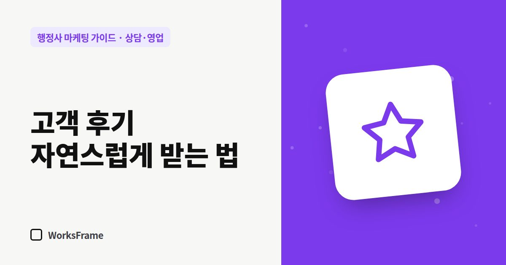

상담·영업
고객 후기, 자연스럽게 받고 규정 지키는 법 — 행정사 사무소 편
한 줄 답
결과를 알려 드린 직후, 리뷰 링크와 함께 짧게 부탁하세요. 돈이나 할인을 주고 쓰게 하면서 숨기거나, 가짜 후기를 올리는 건 하면 안 됩니다.

처음 보는 행정사 사무소에 연락하기 전, 고객은 다른 사람의 경험을 찾습니다. 후기 몇 개가 긴 소개글보다 강합니다. 문제는 부탁하기가 어색하다는 것입니다.
요청하는 타이밍
- 결과를 안내한 직후 — 고객의 만족이 가장 큰 순간
- 결과 안내 메시지 끝에 한 줄 덧붙이기
도움이 되셨다면 네이버에 짧은 후기를 남겨 주시면 비슷한 일로 고민하는 분들께 큰 도움이 됩니다. (링크) 부담 갖지 않으셔도 됩니다.
쓰기 쉽게 도와주기
- 리뷰 작성 링크를 바로 보내기
- “어떤 점이 좋았는지 한 줄이면 충분합니다”
- 외국인 고객에게는 구글 리뷰 링크와 모국어로 써도 된다는 안내
하면 안 되는 것
| 하면 안 되는 것 | 이유 |
|---|---|
| 돈이나 할인을 주고 후기를 쓰게 하면서 그 사실을 숨기기 | 대가성 후기는 그 사실을 밝혀야 합니다(추천·보증 심사지침의 취지) |
| 가족·지인에게 가짜 후기 부탁 | 표시·광고 규정 위반 소지, 플랫폼 제재 |
| 후기 대행 업체 이용 | 위와 같은 위험 + 계정 제재 |
| 나쁜 후기 삭제 압박 | 신뢰 손실 |
나쁜 후기가 달렸다면
- 하루 정도 두고 감정을 가라앉힌 뒤
- 사실관계를 확인하고
- 짧게 인정할 것은 인정하고, 개선할 점을 적기
- 개인정보나 사건 내용은 답글에 쓰지 않기
차분한 답글은 나쁜 후기를 오히려 신뢰의 근거로 바꿉니다.
홈페이지에 후기를 옮길 때
실제 후기를 고객 동의를 받고, 원문을 고치지 않고, 출처(네이버 리뷰 등)를 밝혀 옮기세요.
자주 묻는 질문
후기 이벤트(추첨 선물)는 괜찮나요?
대가가 있는 후기라는 점을 분명히 밝혀야 하고, 플랫폼마다 정책이 다릅니다. 확실하지 않다면 하지 않는 편이 안전합니다.
후기가 하나도 없는데 어떻게 하죠?
처음 고객 몇 분께 정중히 부탁하는 것부터 시작하세요. 사무소 규모와 상관없이 누구나 0개에서 시작합니다.